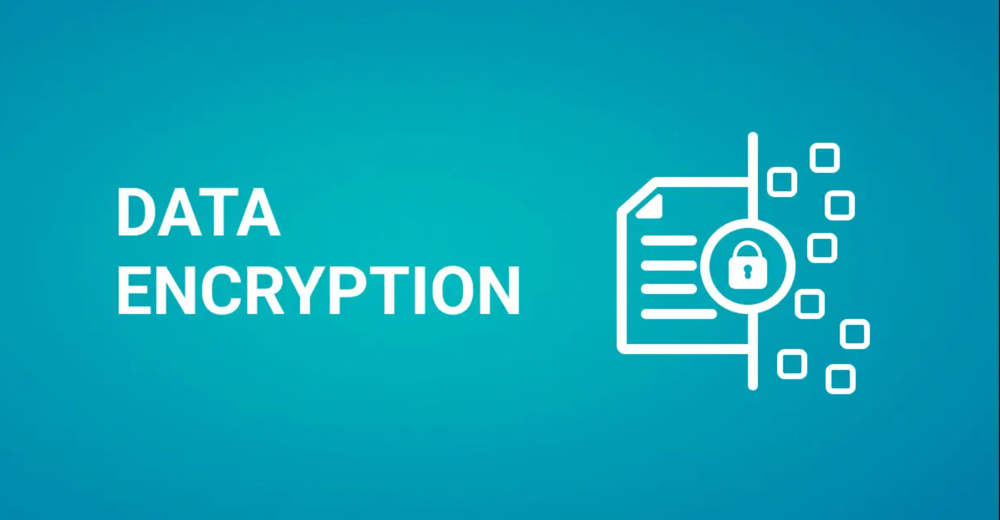
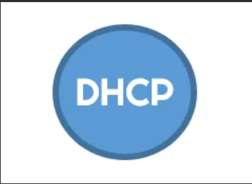

RÉALISATIONS EN COURS DE FORMATION
Mes projets et travaux pratiques
-
 Livrable GLPI — Active Directory, DHCP, OCS & GLPIGestion de parc · Windows Server, OCS Inventory, GLPI
Fiche en ligneDocumentation (PDF)
Livrable GLPI — Active Directory, DHCP, OCS & GLPIGestion de parc · Windows Server, OCS Inventory, GLPI
Fiche en ligneDocumentation (PDF)
-

Chiffrer les donnéesSécurité · chiffrement des fichiers et supports Documentation (PDF) - ZimbraMessagerie · serveur de messagerie collaborative Documentation (PDF)
-

DHCP FailoverHaute disponibilité · basculement entre deux serveurs DHCP Documentation (PDF) - Installation pfSensePare-feu · interfaces WAN/LAN et règles de filtrage Documentation (PDF)
- Procédure OCSInventaire · installation d'OCS Inventory et déploiement des agents Documentation (PDF)
-
 Livrable HAProxy — Redondance & Load BalancingHaute disponibilité · HAProxy, Heartbeat, Apache2, Debian 12
Documentation (PDF)
Livrable HAProxy — Redondance & Load BalancingHaute disponibilité · HAProxy, Heartbeat, Apache2, Debian 12
Documentation (PDF)
- GatewayRéseau · passerelle, routage et NAT Documentation (PDF)